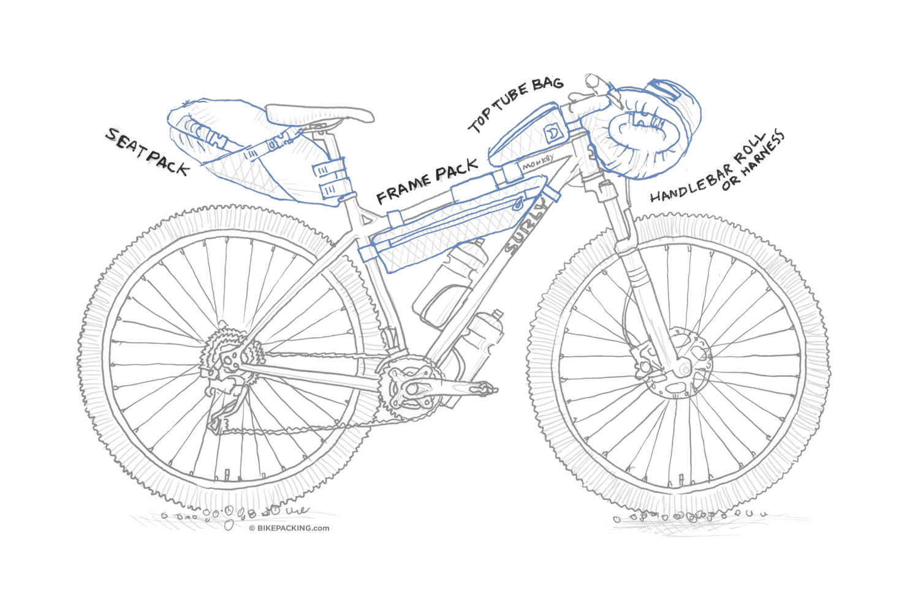

Bikepacking
Detailed notes and thoughts.
Contents
Motivation
Bikepacking represents the next obvious step in my personal development (as of the time of writing). It combines fitness, self-reliance, competence, planning, resilience, courage, and curiosity, all of which are on a different (higher) level than shorter efforts.
I can go harder during my 24-hour mountain bike races to get a similar effort, but it's not the same as knowing the race will last three, five, seven days, spanning across biomes and weather, giving the chance for every mechanical known to bicycles to happen, testing grit for days straight.
Couple this with the travel part of getting to see new places and meet new people and I'm all in.
Side note: there are a gagillion bikepacking guides that exist, but writing this and having it readily available is useful for me.
Gear
Bike
Bike choice is the starting point and depends on the route, priorities, and ability:
-
Route:
-
How smooth is it? Percentage of road, gravel, singletrack? How rough is the gravel or singletrack, if any?
-
How many resupply points are there with how much distance between each? Can the bike hold enough materials to last between resupply points? Remember that repair gear is approximately fixed.
-
Priority:
-
Speed: Opt for a lighter, more aerodynamic bike (gravel)
-
Comfort: Opt for a bike with more suspension (full suspension)
-
Safety: Opt for a bike with minimal mechanical risks and good control (hardtail)
-
Ability:
-
Fitness: Fitter riders can ride with less gear, nutrition, etc
-
Repair: More mechanically apt riders can ride with more complex bikes
-
[FINISH]
| Bike Type |
Pros |
Cons |
| Gravel Bike |
- Fastest and most efficient on roads and smooth trails
- Excellent for mixed terrain routes
- Multiple hand positions for comfort
- Typically lighter weight
- Great frame bag space
- Often has many mounting points
|
- Limited tire clearance
- Less stable on technical terrain
- Can be harsh on rough descents
- More aggressive position may be tiring
- Limited gear range for steep climbs
|
| Rigid Mountain Bike |
- More stable than gravel bikes
- Accommodates wider tires
- Upright position for comfort
- Simple, reliable design
- Great carrying capacity
- Usually budget-friendly
|
- Slower on roads and smooth trails
- Limited hand positions
- No suspension for rough terrain
- Heavier than gravel bikes
- May have fewer mounting points
|
| Hardtail MTB |
- Front suspension for comfort
- Great on technical trails
- More control on descents
- Good balance of efficiency and comfort
- Can handle heavy loads well
- Only one suspension to maintain
|
- Heavier than rigid bikes
- Fork needs maintenance
- Less efficient pedaling with suspension
- Can be challenging to pack around fork
- More expensive than rigid bikes
|
| Full Suspension MTB |
- Maximum comfort on rough terrain
- Best for technical trails
- Excellent control on descents
- Reduces rider fatigue
- Most capable in challenging conditions
|
- Heaviest option
- Most expensive
- Regular suspension maintenance needed
- Limited frame bag space
- Least efficient pedaling
- Most complex to pack
|
Bags
There are four main types of bags:
-
Frame: Fits between the
-
Handlebar:
-
Top tube:
-
Saddle:
https://bikepacking.com/plan/guide-to-bikepacking-bags/

See Also